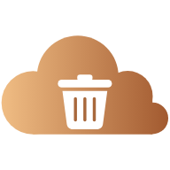

CleanLog ヘルプ
English: Help in English
はじめに（最初の準備）
ゴミ拾いで見つけたごみを、写真・種類・場所と一緒に地図に残すアプリです。
① ホーム画面に追加する
https://cleanlog.doitmyself.net/ を開き、iPhone は Safari の共有ボタン →「ホーム画面に追加」、Android は Chrome のメニュー →「ホーム画面に追加」（アプリをインストール）で、アプリと同じように使えます。 ⚙ 設定 の下の方にある QR コードを、スマートフォンで読み取っても開けます。
② Google にログインする
右上の ログイン を押し、Google アカウントでログインします。確認画面では「Google ドライブのファイル…」にチェックを入れて「続行」を押してください。 ログインできると、ボタンの縁が緑にふわっと光ります（オンラインで使える状態）。
記録する（撮影・アルバム）
- 地図の上の 📷 撮影 を押して撮影するか、🖼️ でアルバムの写真を選びます。
- 「ごみの種類」を選びます。ファイル名に「タバコ」「缶」「candy」「toy」などのことばが入っていると、種類が自動で選ばれることがあります。違っていたら選び直してください。
- 「撮影日時」を確認します。アルバムの写真は、写真に記録された撮影日時が入ります（無ければファイルの日時）。
- Drive に保存 を押すと、写真とデータが Google ドライブに保存されます。
場所（位置情報）
- アプリで撮影したときは、撮影した時点の現在地が入ります。場所が取れなかったときは 現在位置を記録 を押してください。
- アルバムの写真は、写真に記録された位置が入ります。
- より正確な位置が必要なときは、端末のカメラアプリで撮影してから、🖼️ でその写真を選びます。
地図と一覧の見かた
- ごみ分布マップ: 記録が、ごみの種類ごとの色のマークで表示されます。マークを押すと、写真と内容が見られます。
- 記録期間: 押すと、表示する期間（開始日・終了日）を選べます。
- 期間/地図中の数: 選んだ期間の中で、いま地図に見えている範囲にある記録の数です。地図を動かしたり拡大したりすると変わります。
- ごみ密度（個/km²）: 地図に見えている範囲の面積あたりの、記録の数です。
- 地図の現在地ボタンで、いまいる場所に地図を動かせます。
- 下の「最近の記録」の一覧に、選んだ期間の記録が並びます。押すと詳細が開きます。
記録を直す・消す
- 地図のマークまたは一覧の記録を押して、詳細を開きます。
- 編集 で、種類・日時・場所（現在位置を記録）を直せます。直したら 更新 を押します。
- 削除 で、その記録を消します。Google ドライブの写真とデータも削除されます。
設定
右上の ⚙ から開きます。
- 言語 / Language: 日本語と English を切り替えます。
- 画面の配色: 自動（端末の設定に合わせる）・ライト・ダーク。
- ごみの種類: 種類の名前・色の変更、削除、新しい種類の追加ができます（初めは タバコ、缶・瓶、生ごみ、おもちゃ、花火、食べかす、飴・ガム）。
- データのエクスポート・登録済みの端末: 下の各項目を見てください。
データのエクスポート
⚙ 設定 →「データのエクスポート」で、記録を Excel・写真・データ（JSON）にまとめて書き出せます。
- Google Drive に保存: ドライブの「CleanLog」フォルダーの中に、書き出しごとのフォルダー（CleanLog_日付-時刻）を作って保存します。
- この端末にダウンロード（ZIP）: 同じ内容を ZIP 1つにまとめて、この端末に保存します。
- Excel には「記録」（日付・時刻・種類・タイトル・場所・緯度・経度・写真ファイル）と、「種類別」の件数の2つのシートが入ります。
- ログインしていて、記録が1件以上あるときに使えます。
複数人で使う（端末の管理）
- 同じ Google アカウントでログインした端末（最大20台）の記録は、ドライブの「CleanLog」フォルダーに集約されます。
- 20台を超えると、新しい端末では記録を表示・保存できません。⚙ 設定 →「登録済みの端末」で 一覧を表示 を押し、使わなくなった端末を 解除 してください。解除した端末が保存した記録は残ります。
- 解除して枠が空くと、上限で止まっていた端末は、その場で登録され、記録が表示されます。
困ったとき
保存できない・記録が出てこない
- 通信状況と、ログインしているかを確認します。ログインが切れているときは、もう一度ログインしてください。
- 端末の上限（20台）に達していないか、「登録済みの端末」で確認します。
場所が取れない
- ブラウザの位置情報を「許可」にします（iPhone は「設定」→ Safari →「位置情報」）。
- 建物の中では取れにくいので、外に出て 現在位置を記録 を押します。
CleanLog Help
日本語: 日本語のヘルプ
Getting started
Keep the waste you find while cleaning up on a map together with a photo, a type and a place.
1. Add it to your home screen
Open https://cleanlog.doitmyself.net/. On iPhone use Safari's Share button → "Add to Home Screen"; on Android use Chrome's menu → "Add to Home screen" (Install app). You can also scan the QR code near the bottom of ⚙ Settings.
2. Log in with Google
Tap Log in at the top right and sign in with your Google account. On the consent screen, check "Google Drive files…" and tap Continue. When you are logged in and online, the button's border glows green.
Recording (camera / album)
- Tap 📷 Capture above the map to take a photo, or 🖼️ to choose one from your album.
- Choose a type ("Waste types"). If the file name contains a word such as "tobacco", "can", "candy", the type may be picked automatically. Change it if it is wrong.
- Check the "Captured at" date and time. For album photos, the time recorded in the photo is used (or the file's date if there is none).
- Tap Save to Drive to save the photo and data to Google Drive.
Location
- When you capture in the app, your current location at that moment is used. If it could not be found, tap Record current location.
- For album photos, the location stored in the photo is used.
- If you need a more accurate location, take the photo with your device's camera app first, then choose it with 🖼️.
Reading the map and list
- Waste distribution map: records appear as marks colored by type. Tap a mark to see the photo and details.
- Record period: tap it to choose the period (start and end date) to show.
- Records in period & map view: the number of records in the chosen period that are inside the part of the map you are looking at. It changes as you move or zoom the map.
- Waste density (items/km²): the number of records per area of the visible map.
- The locate button on the map moves the map to where you are.
- The list at the bottom shows the records of the chosen period. Tap one to open its details.
Editing and deleting
- Tap a mark on the map or a record in the list to open its details.
- Edit lets you change the type, date/time and place (Record current location). Tap Update when done.
- Delete removes the record. The photo and data in Google Drive are deleted too.
Settings
Open it with ⚙ at the top right.
- Language: switch between 日本語 and English.
- Appearance: Auto (follow device), Light or Dark.
- Waste types: rename, recolor or delete types, and add new ones (to start with: Cigarettes, Cans & Bottles, Food Waste, Toys, Fireworks, Food Scraps, Candy & Gum).
- Export data and Registered devices: see the sections below.
Exporting your data
⚙ Settings → "Export data" bundles your records as an Excel file, photos and data (JSON).
- Save to Google Drive: creates a folder per export (CleanLog_date-time) inside the "CleanLog" folder in Drive.
- Download to this device (ZIP): saves the same content as one ZIP file on this device.
- The Excel file has two sheets: "Records" (date, time, type, title, place, latitude, longitude, photo file) and "By type" (counts).
- Available while you are logged in and have at least one record.
Working as a team (devices)
- Records from every device logged in to the same Google account (up to 20 devices) are combined in the "CleanLog" folder in Drive.
- Beyond 20 devices, a new device cannot show or save records. Open ⚙ Settings → "Registered devices", tap Show list and Remove devices that are no longer used. Records they saved are kept.
- When a slot is freed, a device that was stopped by the limit registers right away and its records appear.
Troubleshooting
Cannot save / no records appear
- Check your connection and that you are logged in. If you were logged out, log in again.
- Check in "Registered devices" that the limit of 20 devices has not been reached.
The location cannot be found
- Allow location access in your browser (iPhone: Settings → Safari → Location).
- It is hard to get inside buildings. Go outside and tap Record current location.